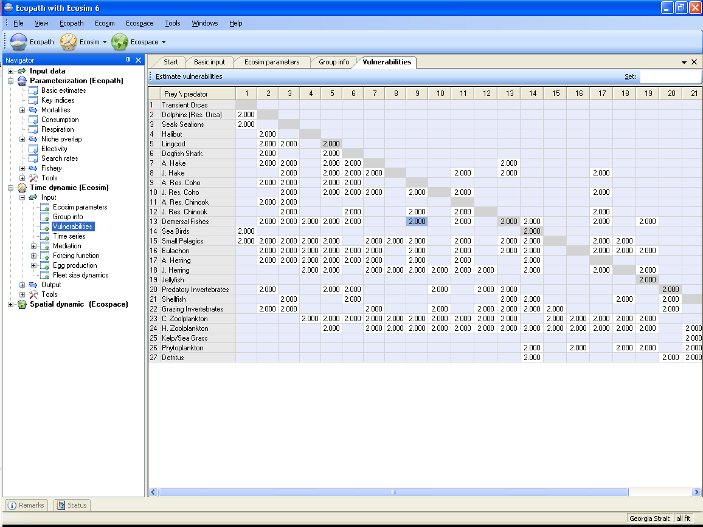

Vulnerabilities are entered on (or transferred from the time series fitting routine to) the Vulnerabilities form (Time dynamic (Ecosim) > Input > Vulnerabilities; see Figure 8.3). You must already have an Ecosim scenario loaded (see Ecosim menu) before you can set vulnerabilities. You must set the vulnerabilities for each new scenario, as all new scenarios have a default setting of 2.0. Note that the default value of 2.0 is arbitrarily assigned. Choosing to keep the default values is as much a decision as setting them to a new value. See Vulnerabilities in Ecosim for further scientific guidance on setting vulnerabilites.
Vulnerabilities can be set for the entire system (using the Set box in the upper right corner of the form). In general, because the vulnerability settings concern foraging behaviour, the same vulnerability is set for all of the prey of a certain predator (i.e., vulnerabilities are set column-wise). Individual values can be entered to characterize, e.g., the interactions of one (or several) predator/prey pair(s) under special conditions. We caution against setting different vulnerability parameters for every predator-prey interaction. While doing so may provide a better statistical fit to the time series data, it is unlikely that there is enough information in the data to distinguish among different parameter-combinations: i.e., the model will be overparameterized.
To transfer a set of vulnerabilities to a new scenario, use the Save scenario as option on the Ecosim menu to save an existing scenario and its associated vulnerabilities under a new name. Alternatively, use different scenarios to test for sensitivity to different sets of vulnerability values.

Figure 8.3. Ecosim vulnerability settings reflecting how far a consumer is from its carrying capacity with regards to a prey.